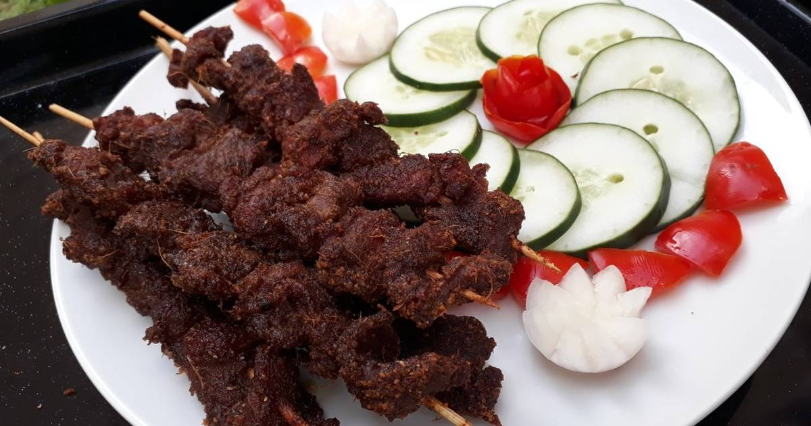

Africa's Trigger
Featured Items
Jollof or jollof rice, is a rice dish from West Africa. The dish is made with long-grain rice, tomatoes, onions, spices, vegetables and meat in a single pot
Suya is made with skewered beef, ram, or chicken. The thinly sliced meat is marinated in various spices and flavorings, and then barbecued.
Efo riro translates to mixed spinach and thats exactly what this soup is made of! Mix your soup with a variety of meats from our selection!